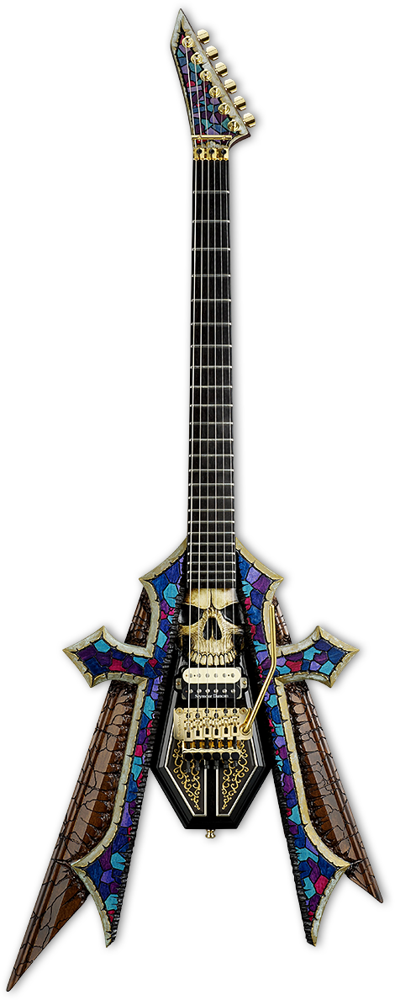
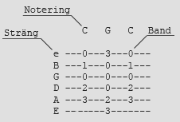
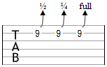
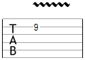
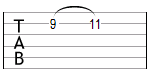
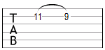
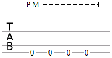

Läsa tabulatur eller "tabs" kan vara skrämmande och ovant om man inte vet vart man ska börja. Hela systemet är mycket enkelt att lära sig och det används för att beskriva hur du ska spela låtar.
Du hittar tabs på Ultimate Guitar som är den mest populära hemsidan för tabs. Dock så är 911Tabs mycket modernare och snyggare än Ultimate Guitar.
Två varianter hur en tab kan se ut. En tab kan göras i både program och för hand i ett text format. Här är dessa två varianter:

- 
Symbolernas betydelse är det som tar tid. Här är några av de symbolerna du kommer stöta på mest när du läser tabs:
- Bends
- Bends skrivs enligt följande i tabulatur ("full" betyder att du böjer tonen ett helt tonsteg uppåt).
- 
- Vibrato
- Den vågade linjen betyder att du ska hålla ut tonen i form av ett vibrato. Detta skrivs ibland också med ett "V" ovanför tabulaturen.
- 
- Hammer on
- Hammer on skrivs genom en båge till tonen du ska göra din hammer on på. Kan även skrivas med ett "H".
- 
- Pull off
- Pull off liknar hammer on - genom siffrorna kan du dock förstå att det är en pull off som avses. Kan även skrivas med ett "P".
- 
- Palm muting
- Palm muting i en tabulatur anges med "P.M." och de streck som följer visar hur länge du ska spela med palm muting.
- 
- Övriga Tecken
- / - slide
- x - mute (dämpa tonen)
- T - tap
- tr - trill